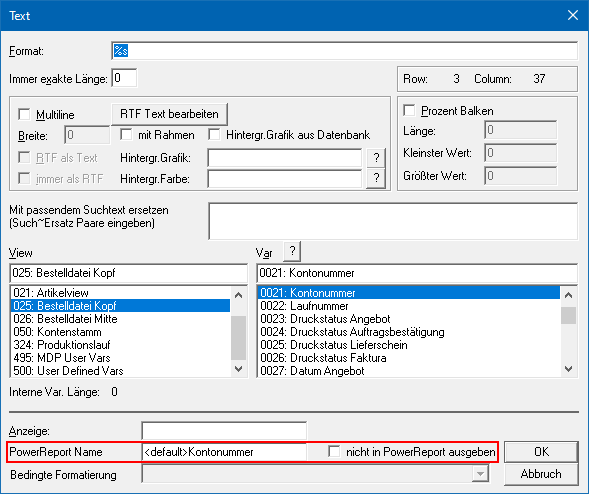

Durch Drücken des Buttons "Power Report" in der Druckvorschau werden die Daten der Ausgabe grafisch dargestellt. Die Ausgabe ist individuell anpassbar und erfolgt in der Form von Power Report - Widgets, die unterschiedlichsten Darstellungen ermöglichen. Es handelt sich dabei immer um eine Betrachtung von Daten, d.h. es werde nie Stamm- oder Bewegungsdaten geändert.
Achtung
Im Gegensatz zu einem Power Report mit Datenquellen ist die Verwendung weiterer Datenquellen und die Nutzung des Widgets Geo Map nicht möglich.
Hinweis
Die Daten sind immer abhängig von der Auswertung und dem zugrundeliegenden Formular, wobei folgende Punkte zu beachten sind:
ü Ausgabe
Die Mittelteils-Daten
des Dokuments werden zeilenweise ausgelesen und im Power Report zur Verfügung
gestellt. Eventuell nicht benötigte Zeilen (z.B. Überschriften) können per
"Widget Filter" ausgeblendet werden (z.B. über das Datenfeld "Flag").
ü Datenfelder
Es werden alle
"gedruckten" Variablen des Dokuments aufbereitet und an den Power Report
übergeben. Statische Texte stehen im Power Report (im Standard) nicht zur
Verfügung.
ü Text Variablen
Wurde in einer
Zeile des Dokuments eine Text Variablen mit Inhalt gefüllt (z.B. die Kontonummer
in einer Überschriftszeile), so wird diese Information immer automatisch in die
darauffolgenden Zeilen vererbt. Dieses geschieht so lange, bis sich im Dokument
der Inhalt der Text Variablen verändert (z.B. neue Überschrift mit neuer
Kontonummer).
ü Anpassung der Datenfelder
Mit
Hilfe des Formular Editors kann bei jeder Variable angegeben werden, ob diese
ggfs. nicht in den Power Report übergeben werden soll. Zusätzlich ist es möglich
den Namen für die Ausgabe in den Power Report anzupassen.

ü Weitere Datenfelder
Werden
weitere Datenfelder benötigt (Berechnungen, statische Texte, etc.), so können
diese im Formular Editor mit Hilfe des Elements "Formel" designed werden. Das
Ergebnis muss hierbei in eine benutzerspezifische Variable (View 500 - User
Defined Vars) abgelegt, sowie ausgedruckt werden. Für die Ablage stehen pro
Formular 100 numerische und 254 alphanumerische Variablen zur Verfügung.
Eine
andere Möglichkeit wäre das Implementieren des Steuerelements "SQL Ausdruck" per
Formular Editor. Mit Hilfe dieses Steuerelements können im Formular SQL-Abfragen
hinterlegt werden, deren Ergebnisse dann am Formular angedruckt werden können
(das Ergebnis wird automatisch in der View 500 ab Variable 100 zur Verfügung
gestellt). Somit stehen diese Informationen auch im Power Report zur
Verfügung.
ü Ausgabe auf Power Report nicht
möglich
Der Power Report steht im WinLine ADMIN grundsätzlich nicht zur
Verfügung. Des Weiteren ist eine Anwahl des Buttons nicht möglich, wenn es keine
Daten gibt oder die Erzeugung der Daten durch den Benutzer (siehe "rechten
Maustaste" - Funktion "Daten für Power Report erzeugen") oder einen
Administrator (per "Formular Editor" - Deaktivierung der Power Report-Ausgabe
bei allen Variablen) unterbunden wurde.